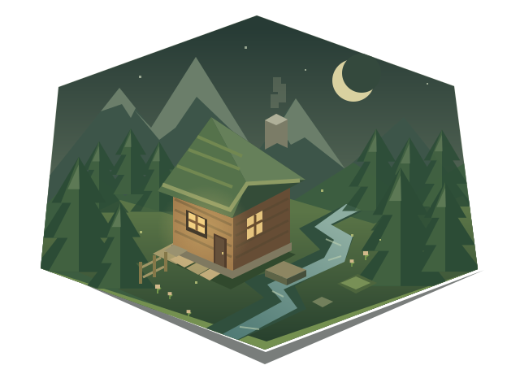

DEIN KLEINES STÜCK MINECRAFT
Große Abenteuer.
Gemütlich zu Hause.
Durch verwunschene Wälder streifen, Magie entdecken und am Ende nach Hause kommen. Entdecke die Mods, die unsere gemeinsame Welt besonders machen.

Platz für dein nächstes Abenteuer.DAS STECKT IN UNSERER WELT
Dein Mod-Kompass.
Für neugierige Entdecker, kreative Baumeister
und alle, die es sich gemütlich machen.
Hier ist es noch ganz still.
Für diese Suche haben wir keine Mod gefunden.
Versuche
einen anderen Namen oder eine andere Kategorie.
Der Mod-Kompass macht gerade Pause.
Die Modliste konnte nicht geladen werden. Bitte versuche es noch einmal.
Jede Mod ist ein kleines Stück unserer Welt. Klick auf eine Karte und erfahre mehr.
DEIN ABENTEUER BEGINNT HIER
Mach’s dir bei uns gemütlich.
Mit Prism Launcher in wenigen Schritten in unsere Welt.
-
Prism Launcher einrichten
Prism Launcher herunterladen ↗, installieren und dein Minecraft-Konto hinzufügen.
-
Unser Modpack importieren
Die Installations-ZIP herunterladen. In Prism auf „Instanz hinzufügen“ → „Importieren“ klicken und die ZIP auswählen.
-
Ankommen & losspielen
Den Import abschließen, die Instanz starten und eventuelle Hinweise zum ersten Start befolgen. Willkommen im Abenteuer!
Die Installations-ZIP wird hier nach ihrer Freigabe verlinkt.
Fragen zum Import? Zur offiziellen Prism-Anleitung ↗